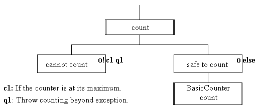

The design of the count() action
is as follows.

The exclamation mark on the cannot count
component indicates that it will throw an explicit
exception if condition 1 (c1) is satisfied, this is keyed
as q1 on the design. The implementation of this
design is as follows.
0021 public void count() {
0022 if ( this.isAtMaximum()) {
0023 throw new CounterException( "Attempt to count beyond limit.");
0024 } else {
0025 super.count();
0026 } // End if.
0027 } // End count.
Line 0023 uses the throw keyword to cause
the exception to be thrown, the exception thrown is a CounterException with the reason set to "Attempt to count beyond
limit".